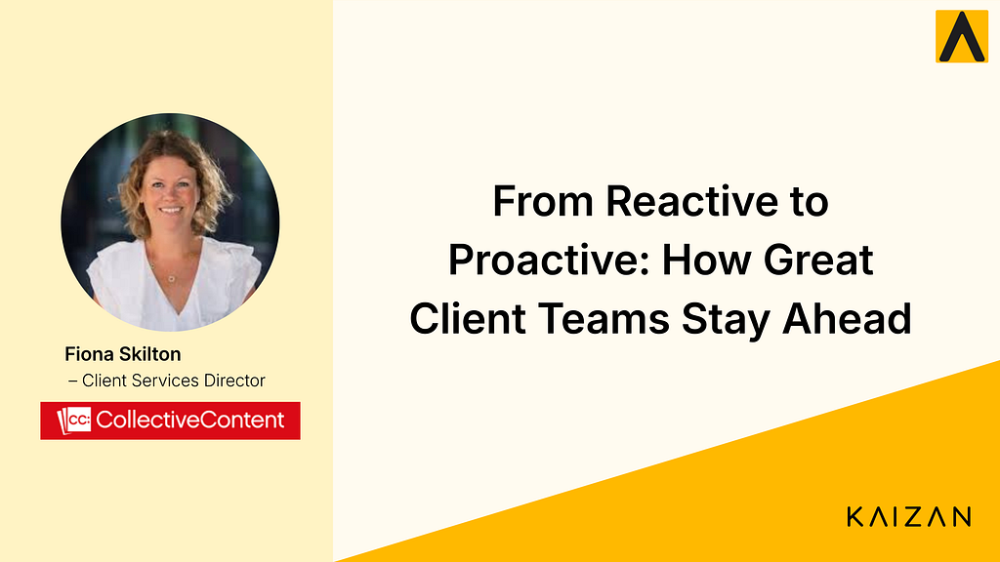

From Reactive to Proactive: How Great Client Teams Stay Ahead

Managing client relationships has never been more demanding. With inboxes overflowing, calendars packed, and the expectation to always be “on,” staying meaningfully connected with clients takes more than good intentions — it takes the right habits, the right mindset, and increasingly, the right tools.
We sat down with Fiona Skilton, Client Services Director at Collective Content, to hear how their team is navigating the modern challenges of client management, and what’s made the biggest difference.
Watch the full conversation
Prefer to hear it in Fiona's own words? Watch the full interview on YouTube.
Collective Content is a content marketing agency that helps brands tell better stories, producing strategic, high-quality content that connects with audiences and drives real business results. With a team spanning editorial, strategy, and client services, they work with clients across a range of sectors, making strong relationship management central to everything they do.
The Noise Problem: When Busy Clients Go Quiet
One of the most underappreciated signals in client management isn’t a complaint. It’s silence.
“If a client goes quiet, it can often indicate that there’s a problem, that maybe they’re talking to other agencies,” Fiona explains. “Try and keep that conversation going and show them some love.”
In a world where everything is digital and emails are flying constantly, it’s easy to mistake a lack of friction for satisfaction. But disengagement often precedes churn, and the teams that catch it early are the ones that stay proactive rather than scrambling to recover lost ground.
The Case for Getting Off the Screen
Post-pandemic, many client teams settled comfortably into a rhythm of video calls. It was efficient, familiar, and frankly easier. But there’s something that virtual meetings simply can’t replicate.
“One of the biggest mistakes in client teams at the moment is solely relying on digital communications. It’s so important to have face-to-face meetings as often as you can to really build that relationship. I really love to get out there and see our clients in person and that makes a massive difference.”
The strongest client relationships are built on genuine human connection. Screen time has its place, but showing up in person signals investment in a way that a calendar invite never quite can.
Being Present: The Hidden Cost of Note-Taking
Here’s a scenario every client-facing professional knows well: you’re leading a meeting, trying to listen carefully, respond thoughtfully, and steer the conversation, all while furiously scribbling notes you hope will make sense later.
“One of the biggest challenges I had was actually taking notes during meetings while I was leading the meeting. It’s very difficult to be thinking on your feet, presenting, discussing stuff with clients, whilst taking notes that I know are going to be meaningful when I look back at them.”
The cognitive load is real, and something always suffers. Either the quality of the conversation or the quality of the notes. That tension used to be unavoidable. Now, with Kaizan handling transcripts and call recordings automatically, the team can be fully present in every meeting, confident that nothing important will slip through the cracks.
From Desk Research to Instant Insight
Knowing your client, their business, their sector, their challenges, is the foundation of proactive account management. But building that picture used to mean hours of desk research before every meaningful conversation.
“Previously we were having to do lots of desk research and that took an awfully long time. We don’t have to spend that time doing that anymore.”
Kaizan’s Client 360 gives the team an at-a-glance view of what’s happening in each client’s world, freeing them up to spend less time gathering information and more time acting on it. Ideas come faster. Conversations go deeper. And the client feels it.
The same efficiency extends to collaboration. Transcripts and call recordings can be shared instantly with the wider team, including freelance writers, so everyone delivering work is working from the sa
me, accurate picture.
Knowledge as a Competitive Edge
When asked what separates good client teams from great ones, Fiona’s answer is unambiguous.
“It’s the hunger and thirst for wanting to know as much as you possibly can about your clients and being proactive with ideas. Rather than just sitting there being reactive and taking briefs, it’s about arming yourself with knowledge about the client, the organisation, their sector, really getting to know them as individuals as well as a company, and then taking ideas to them.”
Proactivity isn’t just a nice-to-have. In competitive markets where clients have plenty of options, being the agency that shows up with ideas rather than waiting to be briefed is one of the most powerful differentiators there is.
Measuring What Matters
Great client teams don’t just operate on instinct. They track, measure, and course-correct. With the whole team now on Kaizan, CSAT scoring has become a central part of how Fiona monitors relationship health across the portfolio.
“I can see if the CSAT score is dropping. Obviously we want it to be high and we want it to continue to increase and that’s been a really useful part of using Kaizan for us.”
Having that visibility at a leadership level means problems can be spotted and addressed early, rather than discovered too late.
The Bottom Line
The best client teams aren’t just responsive. They’re knowledgeable, present, and proactive. They show up in person when it matters. They notice when something feels off. And they use the right tools to free themselves from the administrative overhead that used to get in the way of doing their best work.
That’s the standard worth building towards.